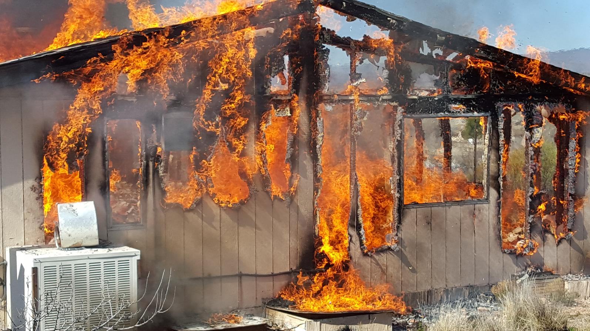

“Fire season
is just around the corner
and it’s time
to get your home prepared”
The 2017 fire season looks like it may be a big one. There was a huge amount of precipitation last fall and winter throughout the West.
California witnessed the wettest winter in five years with some parts of the state getting 250 percent more precipitation than in a typical year. Thousands of people were evacuated after spillway damage to the Oroville Dam in Northern California threatened to collapse the entire dam.
Locally, heavy rains caused a mudslide in Oak Creek Canyon while Oak Creek and the Verde River were often flowing higher and faster than normal. Meanwhile, the Flagstaff area saw heavy snowfall, which will filter into our aquifer as spring temperatures warm our region.
Wildfires are already burning; as of Friday, March 24, there were 83 fires burning in 14 Western states.
burning in 14 Western states
In May 2014, a fire began just north of Slide Rock State Park. Drier-than-normal conditions plus wind gusts of 30 to 40 mph turned what could have been a small, contained blaze into a major inferno, burning 21,227 acres in Oak Creek Canyon and atop the Coconino Plateau. It was the largest-ever fire in the history of the Coconino National Forest and second-largest in the history of Coconino County.
The 16-day blaze closed down State Route 89A in Oak Creek Canyon. The U.S. Forest Service closed access points from the Vista Overlook to Midgley Bridge for months afterward to help the canyon stabilize.
This fire season, be hyper-vigilant.
If you see smoke, call 911 immediately. Don’t build campfires in areas under fire restrictions. If someone throws a lit cigarette from a car window, don’t just curse, call the Coconino or Yavapai county sheriffs offices and report the license plate.
Don’t smoke on forest land and if you see someone smoking on a trail, politely inform them of the dangers and ask them to extinguish their cigarette.
Contact the Sedona Fire District now and have your home evaluated for fire risk. The fire marshal can advise you what changes to your landscaping and brush will keep your home safe. There is still plenty of time to make small changes that could keep your home safe and standing.
The more properties fire marshals visit means fewer properties on which they may have to fight a blaze.
The most important tactic is to create “ defensible space ” around your home, an area that protects your home should fire reach your property. Clean up debris that could catch fire, trim back trees and cut brush that could catch fire. In the event of a catastrophic fire that threatens homes, defensible space makes the difference between whether fire crews are able to defend your home or not.
The 2013 8,400-acre Yarnell Hill Fire — which tragically took the lives of 19 wildland firefighters — destroyed 129 buildings in the small town south of Prescott. 
Defensible space is doubly important if you live near vacant lots or abut U.S. Forest Service land.
Obey all fire restrictions. Nearly every fire organization and state land agency operating in Northern Arizona implements strict fire restrictions at some point in the spring, lasting through the oncoming monsoon in June and July.
Prepare an emergency kit and make sure irreplaceable mementos like photo albums and birth certificates can be grabbed in case you are evacuated from your home.
Be aware of Red Flag warnings — notices issued by the U.S. Forest Service and other agencies warning residents of increased fire risk due to high winds. We will print these in our newspaper and post them on our website and Facebook page as we receive them.
a whole to prevent another
tragedy this fire season.